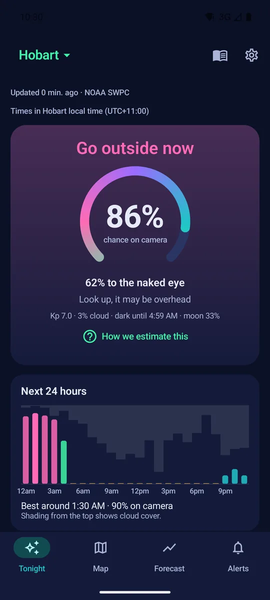
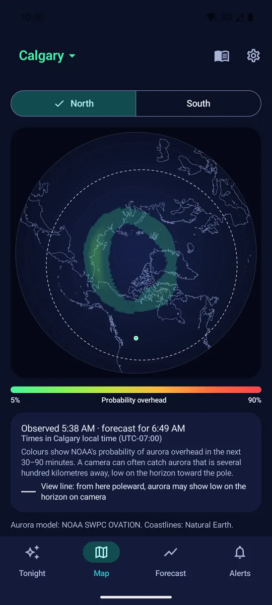
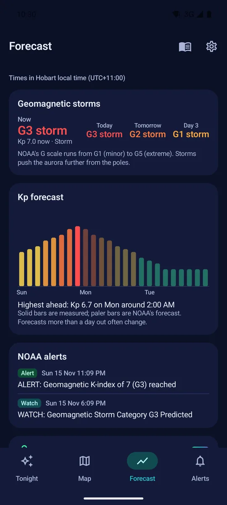
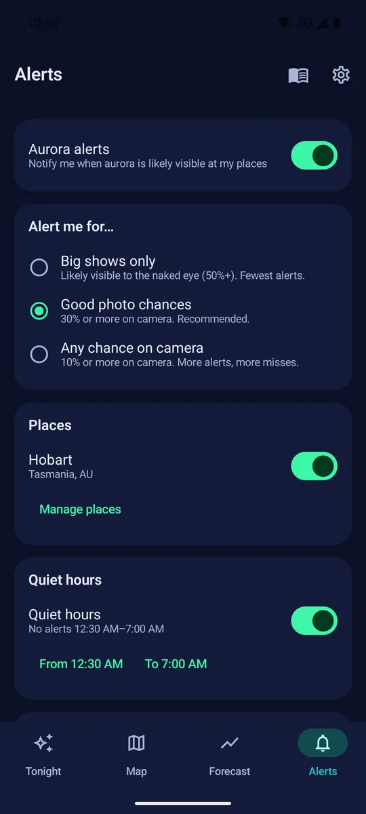
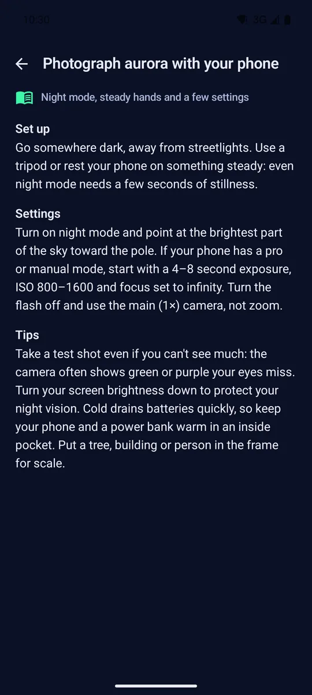

Tonight, for your place
A camera chance and a naked-eye chance, a plain verdict, the best time to look and the direction to face, with clouds, darkness and moonlight included.
Aurora Radar turns live NOAA space-weather data, darkness, moonlight and clouds into one honest answer for your town: your chance on a phone camera, your chance with the naked eye, and when to look.


The planetary Kp index and NOAA's 3-day forecast, straight from the Space Weather Prediction Center. Times are in your time zone.
NOAA's live data couldn't be loaded right now. The rest of this page works without it; try again in a few minutes.
Data: NOAA Space Weather Prediction Center, estimated 1-minute Kp and the 3-day Kp forecast. Kp is a planetary 3-hour index, so it is only part of the picture: the app also uses NOAA's aurora map, the solar wind, darkness, the moon and clouds for your place.
Built for mid-latitude hopefuls, aurora travellers and phone photographers, in both hemispheres.
A camera chance and a naked-eye chance, a plain verdict, the best time to look and the direction to face, with clouds, darkness and moonlight included.
NOAA's 30 to 90 minute OVATION forecast for both hemispheres, with a line showing how far away aurora can still appear low on your horizon.
The 3-day Kp forecast, NOAA watches and alerts and the live solar wind, all in your place's local time, even when you plan from another time zone.
Choose big shows only, good photo chances, or any chance on camera. Quiet hours keep faint glows from waking you, and alerts match what you see when you open the app.
Short guides to photographing aurora with your phone, to what Kp really means, and to the solar wind numbers experienced chasers watch.
No account. Ads are muted, full-screen ads never interrupt you when you open an alert or while aurora is likely, and between-screen ads are capped at three a day.
Most apps show the chance of aurora directly overhead. You don't need it overhead: a phone camera can catch it hundreds of kilometres away, low toward the pole.
About every 15 minutes the app checks the Kp index and the solar wind, a download of a couple of kilobytes. NOAA's full OVATION aurora map is fetched when you open the app or when activity nears your alert level.
It works out your magnetic latitude, how far toward the pole aurora is still visible on your horizon, when it is properly dark, how bright the moon is, and the cloud forecast.
You get a camera chance, a naked-eye chance, the best time tonight and the Kp your town needs. Everything is calculated on your phone; there is no server in between.



Kp is a planetary index from 0 to 9 that measures how disturbed Earth's magnetic field is, worked out every 3 hours from magnetometers around the world.
The aurora forms an oval around each magnetic pole. When Kp rises the oval grows and moves away from the pole; each step moves its edge roughly 2° of magnetic latitude. NOAA names storms by Kp: G1 (minor) at Kp 5, G2 at 6, G3 at 7, G4 at 8 and G5 (extreme) at 9.
Kp is a 3-hour average for the whole planet. A substorm can bring a bright display while Kp is modest, and a high Kp doesn't guarantee a show where you are. That is why the app also watches the solar wind and NOAA's aurora map.
| Place | Kp for a good camera chance* |
|---|---|
| Tromsø, Norway | 0–1 |
| Fairbanks, Alaska | 0–1 |
| Reykjavík, Iceland | 0–1 |
| Edinburgh, Scotland | about 4 |
| Hobart, Tasmania | about 4 |
| London, England | about 5.5 |
| Minneapolis, USA | about 5.5 |
*From Aurora Radar's model for a 30% chance on a phone camera in full darkness with clear skies. Highlighted rows are within reach at NOAA's forecast peak for the next 3 days.
Phone cameras often see colour your eyes miss. These six steps get most people their first shot.
The free version shows a few muted ads. Aurora Radar Pro is optional and removes them.
Everything you need to know whether to go outside.
For chasers, photographers and trips.
Monthly, yearly or a one-time lifetime purchase, billed by Google Play in your currency. The app shows the exact price and any trial end date before you pay. Cancel any time in Google Play.
Aurora Radar has no account and no server of its own. The privacy policy has every detail.
Saved towns and settings are stored on the device. Only a rounded location (about 1 km) is sent to MET Norway to get the cloud forecast.
Approximate location is used only when you tap "Use my approximate location". No background location, ever.
Usage statistics and crash reports are optional and can be switched off in Settings at any time. Analytics never feed ads.
No. The aurora is hard to predict. Aurora Radar's chances are estimates built from NOAA data, darkness, moonlight and the cloud forecast. They are a guide to when it is worth going outside, not a promise.
A phone camera collects light for several seconds and records faint green and purple, including aurora far away and low on the horizon. Your eyes need a brighter display, and moonlight washes out faint aurora for the eye much more than for a camera.
It depends on your magnetic latitude. Under the auroral oval (Tromsø, Fairbanks, Reykjavík) Kp 0 to 1 is often enough on a dark, clear night. Edinburgh and Hobart need about Kp 4 for a good chance on a phone camera, London and Minneapolis about Kp 5.5. The app shows the number for your own town.
Yes. It works for the aurora australis too, for example in Tasmania and New Zealand, and the live map has a southern view.
The app checks about every 15 minutes, and every 10 minutes after dark when activity is close to your alert level. Battery saver or restricting the app in Android settings can delay alerts.
No account. Your places and settings are stored on your phone. The app downloads public data from NOAA, and sends MET Norway your place's location rounded to about 1 km to get the cloud forecast. Without a connection it shows the last forecast it downloaded.
Pro is available monthly, yearly or as a one-time lifetime purchase. Google Play shows the exact price in your currency before you pay. Subscriptions can be cancelled any time in Google Play under Payments & subscriptions, and you keep Pro until the end of the paid period.
Aurora Radar is in testing and coming to Google Play soon. This page will link to it as soon as it is available. It needs Android 8.0 or later and is in English.
Forecasts are estimates. Aurora Radar can't guarantee a display, and alerts can be delayed by your phone's network or battery settings. Stay safe outdoors at night: dress for the cold, never stop on roads, and don't rely on the app for navigation. Aurora Radar is independent and not affiliated with or endorsed by NOAA or MET Norway.